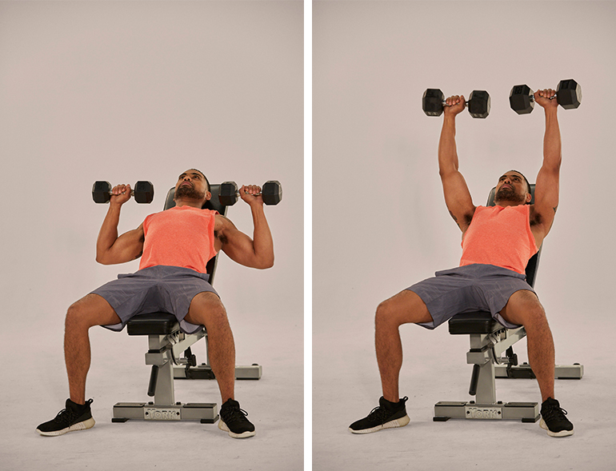

The Inlcine Dumbbell Press

The most optimal form of excercise to perform for your upper chest development. - GYM Bro
HOW TO START AND PREPARE FOR THIS EXCERCISE
Your browser does not support the audio element.
Explanation from a Doctor/Bodybuilder !
Your browser does not support the iframe.